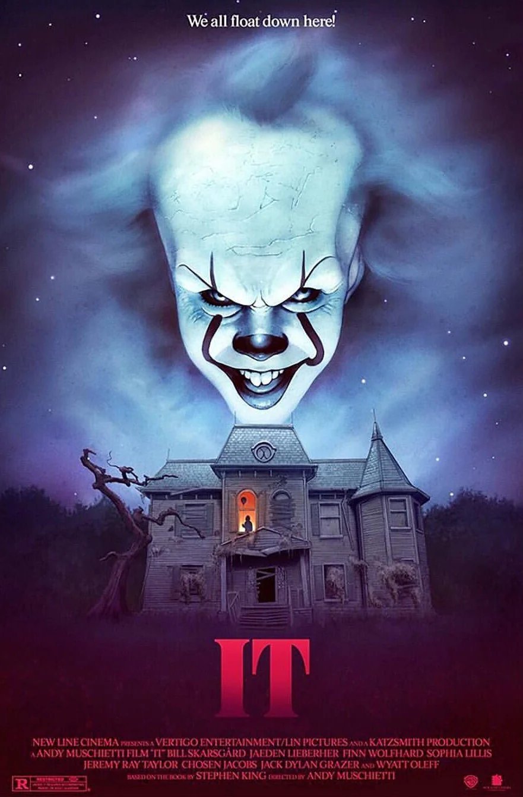
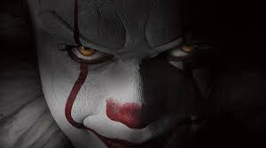
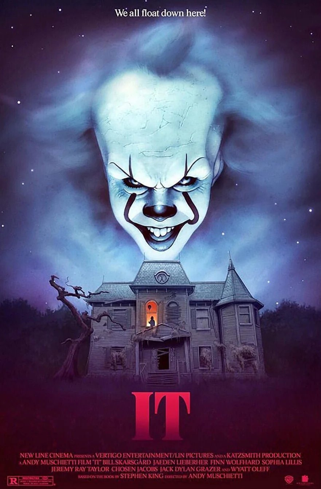
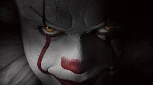

IT
 



In the town of Derry, a group of children known as the Losers' Club begin to encounter a terrifying shape-shifting entity that often appears as a clown named Pennywise. The creature awakens every 27 years to feed on fear—especially the fear of children. As the Losers uncover the dark history of their town, they join forces to confront Pennywise and stop the cycle of terror. Their bond becomes their greatest weapon against the ancient evil lurking beneath Derry.
Actors and Characters
Bill Skarsgård – Pennywise
Jaeden Martell – Bill Denbrough
Sophia Lillis – Beverly Marsh
Finn Wolfhard – Richie Tozier
Jack Dylan Grazer – Eddie Kaspbrak
Chosen Jacobs – Mike Hanlon
Jeremy Ray Taylor – Ben Hanscom
Wyatt Oleff – Stanley Uris
PG 16